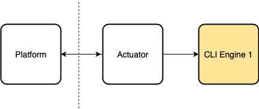
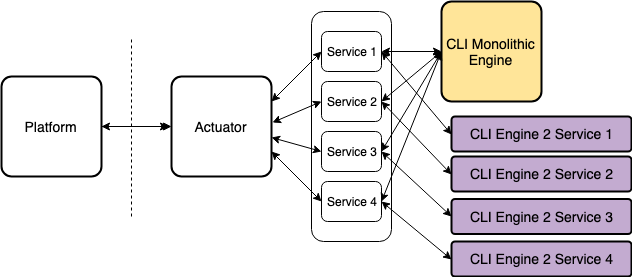
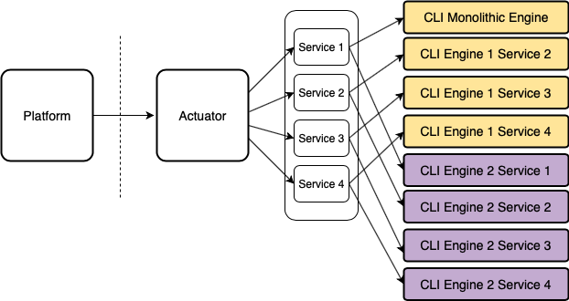

Once upon a time, I joined a company where I faced what had become their Gordian Knot.
The Beast
It all started during the development of their newest product. The company decided to adapt their previous product as a component. The new product is a server-client architecture on-prem. The old product is a desktop application.
The app is a massive monolith. Containing UI code, internal states, license management, a database, etc. After the refactor the resulting component was an engine 120K+ LOC in size.
To interact with this engine, they created a CLI. But the engine kept the internals of the desktop app. So it had to reconstruct internal states from files. It had a single endpoint whose input required a combination of XML files. The engine infers the task to perform from the files it receives.
Every functionality interconnects through a huge core class. This class is in charge of everything.
Initialization, execution, analysis and output generation. Everything.
The engine would also keep behaving like a desktop app. Recovering from errors (hiding them) and using threaded code that is no longer necessary.
The Problem
Our day-to-day was full of support tickets. We had to diagnose this huge codebase where almost anything could happen. Also, the tests required the mocking of the core class. That made them complex and often unreliable. The suite took 40 minutes to run on our CI environment.
We allocated time for maintenance tasks, but progress was slow.
We needed to simplify this. Discard all the desktop code and redefine the input to be what we needed to perform each task. But where to start? we couldn't just stop working on the product.
For years it had shackled progress and innovation.
Finally, the opportunity for improvement appeared and we implemented a very simple solution. After that, all pieces seemed to fall in place on their own and the gears started turning.
I learned a valuable lesson about software design.
The Action Plan
The stack consisted of the platform, the actuator (in charge of invoking the engine) and the engine. The ownership belongs to two teams. One in charge of the platform and the actuator. Another in charge of the engine. I was part of the engine team.
Simplified diagram.

We needed to tear that monolith down into services. Each in charge of a single functionality. Some of the problems we were facing had to do with coordinating our sprint with the other team. The pace of the projects made it impossible as both teams had different priorities.
On our side, we couldn't do much about the input either. The core class was traversal to every functionality. There was no way that refactoring would work. We needed to start from scratch and simplify each service. All while honoring the contract we had with the Platform.
We were stuck with this for months, years. Eventually, PM required me to start working on a new engine for a different system.
We didn't want to limit ourselves from the start (and we had the urgency of coming up with a new feature).
It took some convincing, but I was able to join forces with the other teams. After syncing our schedules we implemented a public interface layer for each service.
The signature of every endpoint would be clean and concise.
We made the new engine from scratch with this interface in mind. While the old one would receive the XMLs through an auxiliary param extra_params.
After implementing the public interface layer and adding the new engine

What we achieved:
- Other teams became consumers of a public interface instead of the CLI.
- No need (or at least much less) to sync with other teams to do maintenance work on our stack.
- We were able to break down the monolith one functionality at a time. The only constraint is committing to the new public interface.
- We coded the new services from scratch, simpler and easier to test. But only because we were very familiar with the subject.
- The interface of the new services requires only what they need to perform their job.
- During the rollout process of new code, we could do AB testing vs the old engine.
- Test suite now takes < 5 min for all projects.
- Public interface required only the necessary to do each task.
The Aftermath
After a couple of months it looked like this:
Some months after the gears started turning

We reduced the LOC count to <10K and increased the testability. The support tickets of our stack became less and less frequent. The monolith engine it's still there, but now it has only one responsibility. The public interface layer also has the responsibility of transforming the output. From the new services (which is our ideal output) to the old output generated by the desktop app (because the Platform expects that) But that is another battle...
Lessons Learned
In the end, a facade untangled this mess. But there was a journey. The root can be traced to a design decision. A shortcut with deceiving convenience left two teams deadlocked for years.
If I have to make a list of takeaways it would include:
- Input is paramount.
- Abstract behind your ideal interface even if its a facade.
- When possible, replace productive code using AB testing during rollout.
- Refactoring is expensive and risky. Make sure you understand the problem.
This is a story about imperfect software design. About working on something huge under constraints beyond our control. About patience and choosing battles. What I learned is that the opportunity for change may come someday and you may not have control over it. All you can do is be ready. Understand the problem in deep, know your constraints. Think outside the box. Spend your time, not frustrating, but preparing to make the best out of the opportunity when (if) it comes.
And, foremost, have patience and a clear mind.